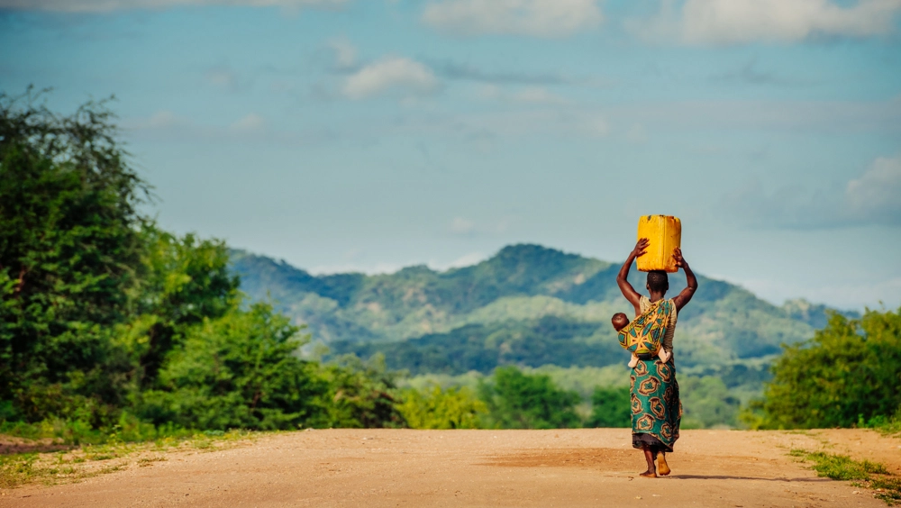

Every day millions of people waste water so effortlessly, taking it from the poeple who need it most. 95% of water that enters homes goes down the drain. Some common ways people waste water is letting the faucet run until the water is cold instead of using ice or a refridegerator to get cold drinking water, running the dishwasher or washing machine before it is full, not fixing leaky faucets or pipes, and overusing garden hoses by overwatering their lawn or using a hose unnecessarly. The earth is 70% water. 2% of that water is fresh. 1.6% of it is trapped in polar icecaps and glaciers, leaving 7 billion people to share 0.4% of that fresh water. One in every three people do not have access to safe drinking water. All countries suffer from lack of clean drinking water, but soem of the worst ones are Mexico, Congo, Pakistan, Bhutan, Ghana, Nepal, Cambodia, Nigeria, Ethiopia, and Vaganda.
